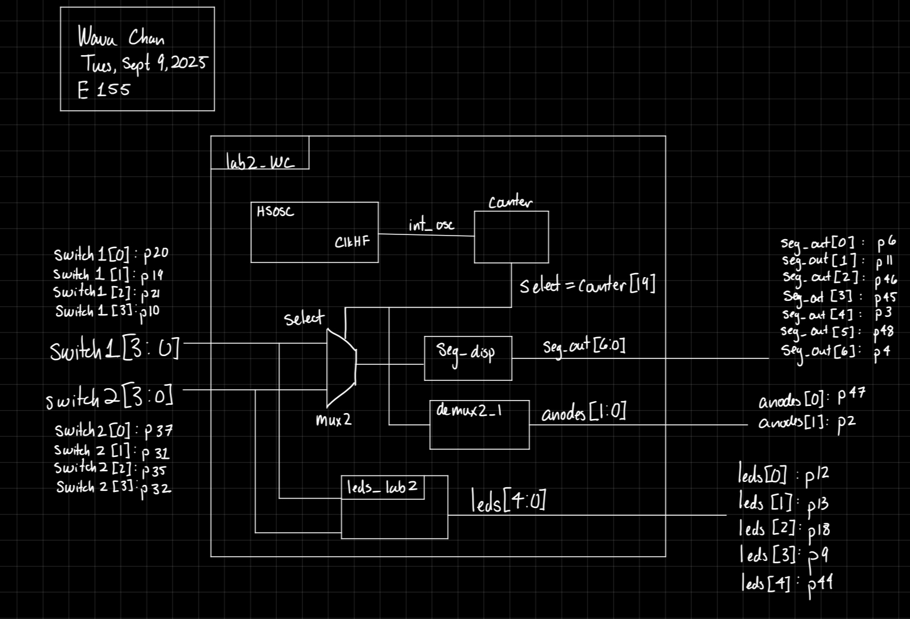
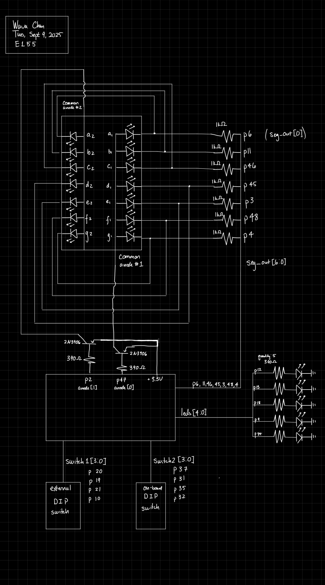
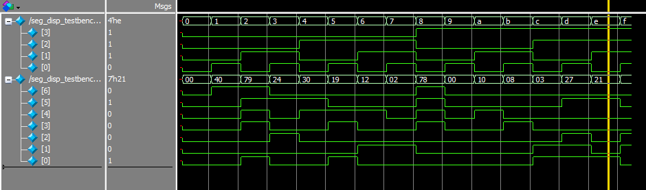
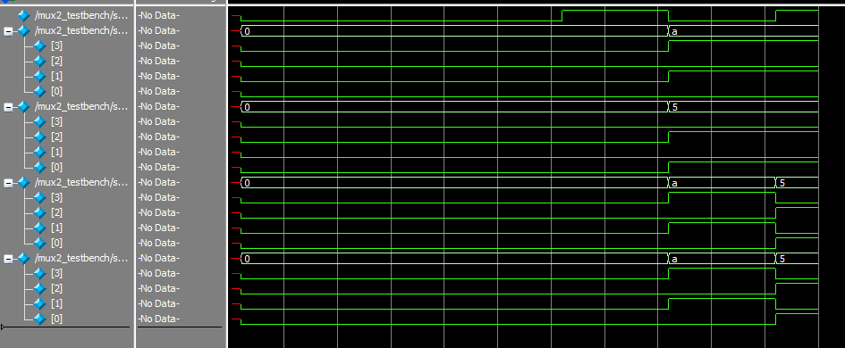
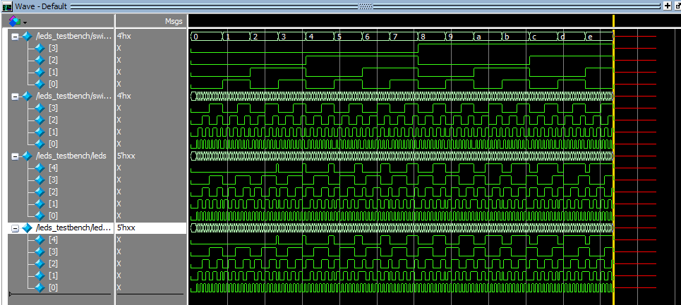
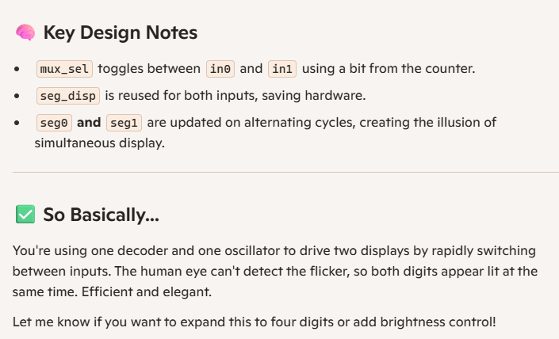

Introduction
The goal of Lab 2 was to design a system (circuit and code) that included a dual 7-segment display, each displaying a hex number, and 5 leds, which would show the sum of the two displayed digits in binary. Given the limited number of pins on the FPGA board, the displays had to be driven by a single set of pins, and rely on time multiplexing to (very quickly) switch between the two displays, so that it seemed like both were on simultaneously.
The input to the displays was provided by two DIP switches.
Design & Testing
Hardware
The circuit used all the FPGA pins, so there had to be multiplexing between the two displays to correctly display different values at the same time. This was done by driving either (not both) of the common anodes, turning each display on in turn, at a higher frequency than the human eye can detect.
The base rate for this detection os 40Hz, so 46.2 Hz was chosen to oscillate at.
The common anode pins on the display were connected to FPGA pins, but these do not provide enough voltage to drive the pin. Thus, the signal to the pins was bolstered by a PNP transistor.
An external (off-board) DIP switch was also connected to the FPGA. The five LEDs used to display the output were also connected FPGA pins, in series with 390ohm resistors.
Overall, the pin assignment is as seen below:
Pin Assignment
| logic | pin |
|---|---|
| switch1[0] | p20 |
| switch1[1] | p19 |
| switch1[2] | p21 |
| switch1[3] | p10 |
| switch2[0] | p37 |
| switch2[1] | p31 |
| switch2[2] | p35 |
| switch2[3] | p32 |
| seg_out[0] | p6 |
| seg_out[1] | p11 |
| seg_out[2] | p46 |
| seg_out[3] | p45 |
| seg_out[4] | p3 |
| seg_out[5] | p48 |
| seg_out[6] | p4 |
| anodes[0] | p47 |
| anodes[1] | p2 |
| leds[0] | p12 |
| leds[1] | p13 |
| leds[2] | p48 |
| leds[3] | p9 |
| leds[4] | p44 |
Software
This system had five modules:
- Lab2_wc: This was the main top module
- seg_disp: Combination logic to dictate which segments would turn on
- Mux (2 to 1): used to select between the two input switches
- Deselect: write to one anode or the other
- LED driver: calculate and assign output to the LED pins
The design was tested using QuestaSim simulations, detailed below in the Results and Discussion section.
Technical Documentation
The code for the project can be found in this Github repository
Lab2_wc
// Wava Chan
// wchan@g.hmc.edu
// Sept. 4, 2025
// Top Level Module for Lab 2: Mutiplexed 7-Seg Display
module lab2_wc( input logic [3:0] switch1,
input logic [3:0] switch2, // Two DIP switches
output logic [6:0] seg_out,
output logic [4:0] leds,
output logic [1:0] anodes); // Writing to the anodes
logic select; //0 for display 0, 1 for display 1
logic [3:0] switch; // Selected switch data
logic int_osc; // internal clock
logic [19:0] counter;
//Create clock
// Internal high-speed oscillator
HSOSC #(.CLKHF_DIV(2'b01))
hf_osc (.CLKHFPU(1'b1), .CLKHFEN(1'b1), .CLKHF(int_osc));
// Counter
always_ff @(posedge int_osc) begin
counter <= counter + 19'd2; //operates at ~46.2 Hz
end
// Google AI says the human eye can detect up to 40Hz of flickering so started there
// Select is based on the clock
assign select = counter[19];
// Select input
mux2 in(switch1, switch2, select, switch);
// Segment Display Module
seg_disp sd(switch, seg_out); // Calculate segments
// Select output
//write HIGH to common anode 1 or common anode 2, depending on select
demux2_1 dm(select, anodes);
// LEDs calculation from switch 1 and switch 2 and LED assignment
leds_lab2 sum(switch1, switch2, leds);
endmodule
### seg_disp
// Wava Chan
// wchan@g.hmc.edu
// Aug. 29, 2025
// seg_disp determines which segments must be turned on for each hexidec digit
module seg_disp(input logic [3:0] s,
output logic [6:0] seg );
logic [6:0] seg_intm;
always_comb begin
// seg[0] is A
// seg[6] is G
case(s)
4'b0000: seg_intm <= 7'b0111111; //0
4'b0001: seg_intm <= 7'b0000110; //1
4'b0010: seg_intm <= 7'b1011011; //2
4'b0011: seg_intm <= 7'b1001111; //3
4'b0100: seg_intm <= 7'b1100110; //4
4'b0101: seg_intm <= 7'b1101101; //5
4'b0110: seg_intm <= 7'b1111101; //6
4'b0111: seg_intm <= 7'b0000111; //7
4'b1000: seg_intm <= 7'b1111111; //8
4'b1001: seg_intm <= 7'b1101111; //9
4'b1010: seg_intm <= 7'b1110111; //A
4'b1011: seg_intm <= 7'b1111100; //B
4'b1100: seg_intm <= 7'b1011000; //C
4'b1101: seg_intm <= 7'b1011110; //D
4'b1110: seg_intm <= 7'b1111001; //E
4'b1111: seg_intm <= 7'b1110001; //F
default: seg_intm <= 7'b1111111;
endcase
seg <= ~seg_intm; // Flip all bits to pull segments DOWN to turn them on
end
endmodule
### Mux
// Wava Chan
// wchan@g.hmc.edu
// Sept. 5, 2025
// Basic 2-in 1-out mux
module mux2 #(parameter WIDTH = 4)
(input logic [WIDTH-1:0] d0, d1,
input logic s,
output logic [WIDTH-1:0] out);
assign out = s ? d1 : d0;
endmodule ### Deselect
// Wava Chan
// wchan@g.hmc.edu
// Sept. 5, 2025
// Basic demux 1 in 2 out for Lab 2
module demux2_1(input logic select,
output logic [1:0] com_an); //Common Anode
always_comb begin
case(select)
1'b0: com_an = 2'b10; // turn on common anode 1
1'b1: com_an = 2'b01; // turn on common anode 2
default: com_an = 2'b00;
endcase
end
endmodule### LED Driver
// Wava Chan
// wchan@g.hmc.edu
// Sept. 5, 2025
// Calculate sum of two switch values and write to LEDs
module leds_lab2(input logic [3:0] switch1, switch2,
output logic [4:0] leds);
logic [4:0] total; // Values from two switches added together
//Calculate total
assign total = switch1 + switch2;
// Assign LEDs appropriately
assign leds = total;
endmoduleSchematic

Block Diagram

Results and Discussion
The design met all the design objectives. The frequency of the toggling was a little slow, and could be picked up by the human eye on occasion, but this is an easy fix. (I just had trouble re-programming my board)
Testbench Simulations
In terms of testing, each of the modules was tested individually. The lower level modules (2-5) were tested to ensure their logical functionality, while the top module (Lab2_wc) was tested to ensure the correct toggling.
Lab2_wc
The output of the toggling was tested/validated using this code:
//Wava Chan
//wchan@g.hmc.edu
//Sept. 7, 2025
//Overall testing of top-level module
`timescale 1ns/1ps
//`define ASSERT() assert else $error
module lab2_testbench();
logic clk, reset;
logic [3:0] switch1, switch2;
logic [6:0] seg_out;
logic [4:0] leds;
logic [1:0] anodes;
//Instantiate dut. Operates at 46.2Hz
lab2_wc dut(switch1, switch2, seg_out, leds, anodes);
// Generate clock
always
begin
clk = 1; #43290045; clk = 0; #43290045;
end
initial begin
dut.counter = 0;
// check assertions
switch1 = 4'b0101
switch2 = 4'b1000
//seg_out = 1110001, leds = 01111
//check if only one or the other is high
assert
property (@(posedge clk) anodes[0] |-> (anodes[1] == 0))
else $error ("not toggling");
$finish
end
endmoduleseg_disp
This was tested last lab, but verified again this lab.

Mux
A simple testbench was created, and the output is as seen below:

Deselect
A simple testbench was created, and the code is as seen below:
// Wava Chan
// wchan@g.hmc.edu
// Sept. 8, 2025
// Testbench for the lab 2 demux module
module mux2_testbench();
logic clk, reset, select;
logic [1:0] anode_out, anode_expected;
// 0 selects switch 2, 1 selects switch 1
//Instantiate device under test
demux2_1 dut(select, anode_out);
// Generate clock
always
begin
clk = 1; #5; clk = 0; #5;
end
initial
begin
select = 1'b0; #1; assert(anode_out == 2'b10) else $error ("for select = 0, error!");
select = 1'b1; #1; assert(anode_out == 2'b01) else $error ("for select = 1, error!");
$finish;
end
endmoduleLED Driver
A simple testbench was created, testing every possible combination of switch inputs, and the output is as seen below:

Conclusion
In this lab, I successfully designed and built a circuit that displayed the hex input of two different DIP switches, as well as showed the sum of those two values via a series of 5 LEDs. I spend 20 hours on this lab
AI Prototype
For this prototype, I used Microsoft CoPilot instead of ChatGPT.
CoPiolot produced a fairly simple script, as seen below. It does not include some of the details I included in my code, such as the use of HFOSC . There are two modules: a multiplexer and a decoder.
module seven_segment_multiplexer (
input logic clk,
input logic rst,
input logic [3:0] in0,
input logic [3:0] in1,
output logic [6:0] seg0,
output logic [6:0] seg1
);
// Internal signals
logic [3:0] current_input;
logic [6:0] decoded_output;
logic toggle;
// Toggle between inputs every clock cycle
always_ff @(posedge clk or posedge rst) begin
if (rst)
toggle <= 0;
else
toggle <= ~toggle;
end
// Select input based on toggle
always_comb begin
current_input = toggle ? in1 : in0;
end
// Instantiate decoder
seven_segment_decoder decoder_inst (
.bin(current_input),
.seg(decoded_output)
);
// Store decoded output into appropriate register
always_ff @(posedge clk or posedge rst) begin
if (rst) begin
seg0 <= 7'b1111111;
seg1 <= 7'b1111111;
end else begin
if (toggle)
seg1 <= decoded_output;
else
seg0 <= decoded_output;
end
end
endmodule
// 4-bit to 7-segment decoder (common anode)
module seven_segment_decoder (
input logic [3:0] bin,
output logic [6:0] seg
);
always_comb begin
case (bin)
4'h0: seg = 7'b0000001;
4'h1: seg = 7'b1001111;
4'h2: seg = 7'b0010010;
4'h3: seg = 7'b0000110;
4'h4: seg = 7'b1001100;
4'h5: seg = 7'b0100100;
4'h6: seg = 7'b0100000;
4'h7: seg = 7'b0001111;
4'h8: seg = 7'b0000000;
4'h9: seg = 7'b0000100;
4'hA: seg = 7'b0001000;
4'hB: seg = 7'b1100000;
4'hC: seg = 7'b0110001;
4'hD: seg = 7'b1000010;
4'hE: seg = 7'b0110000;
4'hF: seg = 7'b0111000;
default: seg = 7'b1111111; // All segments off
endcase
end
endmoduleThis code did indeed synthesize on Lattice.
When I applied the other prompt (while attaching my own code), I receive this code back:
module dual_seg_mux (
input logic [3:0] in0, // First 4-bit input
input logic [3:0] in1, // Second 4-bit input
output logic [6:0] seg0, // Output to first display
output logic [6:0] seg1, // Output to second display
output logic [2:0] led // LED outputs
);
// Internal oscillator and counter
logic int_osc;
logic [32:0] counter;
logic [3:0] mux_input;
logic [6:0] seg_out;
logic mux_sel;
// Instantiate internal oscillator
HSOSC #(.CLKHF_DIV(2'b01)) hf_osc (
.CLKHFPU(1'b1),
.CLKHFEN(1'b1),
.CLKHF(int_osc)
);
// Instantiate shared segment decoder
seg_disp sd (
.s(mux_input),
.seg(seg_out)
);
// Counter for timing and multiplex control
always_ff @(posedge int_osc) begin
counter <= counter + 33'd859;
mux_sel <= counter[15]; // Toggle every ~32k cycles
end
// Multiplex input selection
always_comb begin
mux_input = mux_sel ? in1 : in0;
end
// Drive outputs alternately
always_ff @(posedge int_osc) begin
if (mux_sel)
seg1 <= seg_out;
else
seg0 <= seg_out;
end
// LED logic (example reuse from original)
assign led[0] = mux_input[1] ^ mux_input[0];
assign led[1] = mux_input[3] & mux_input[2];
assign led[2] = counter[32];
endmoduleas well as these comments:

which also synthesized!
The second code was more complex, and more closely aligned with what my current code looks like, since it is based on previous code.